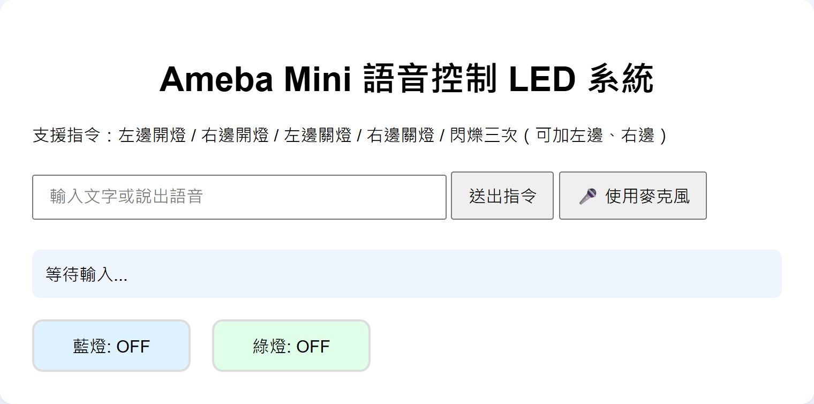
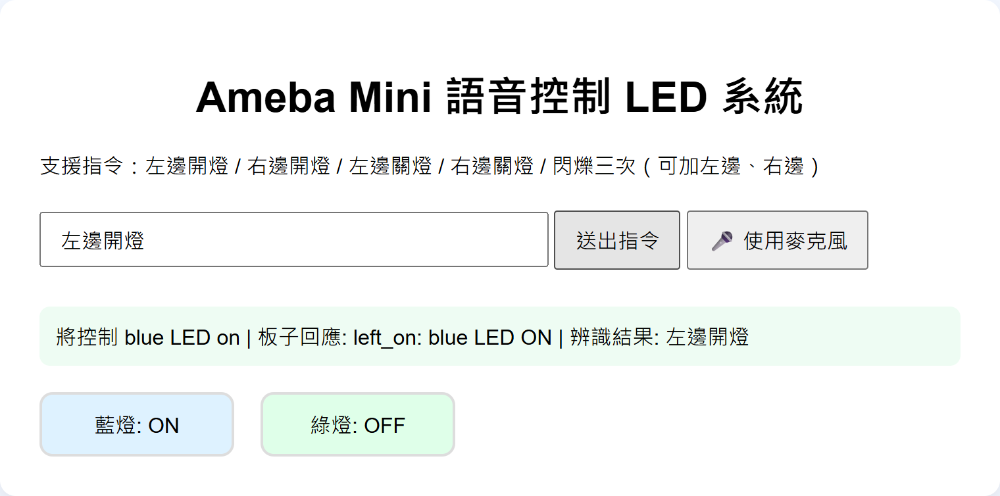
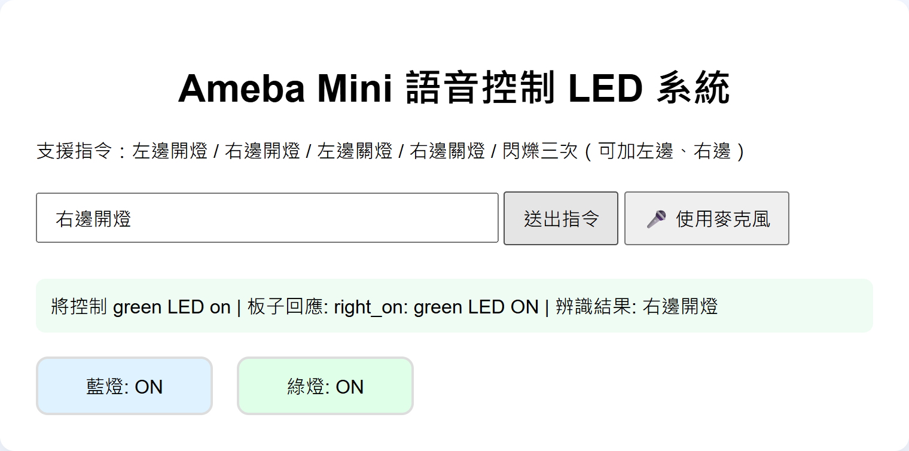
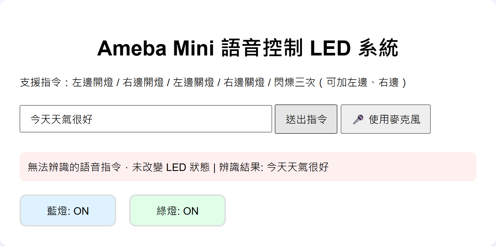
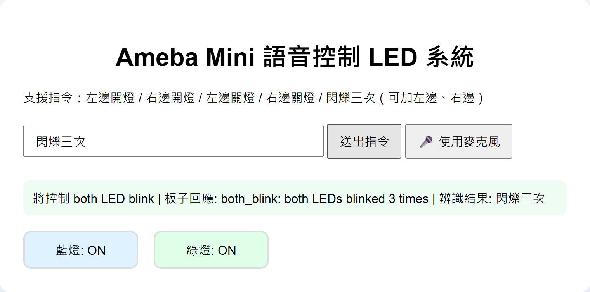
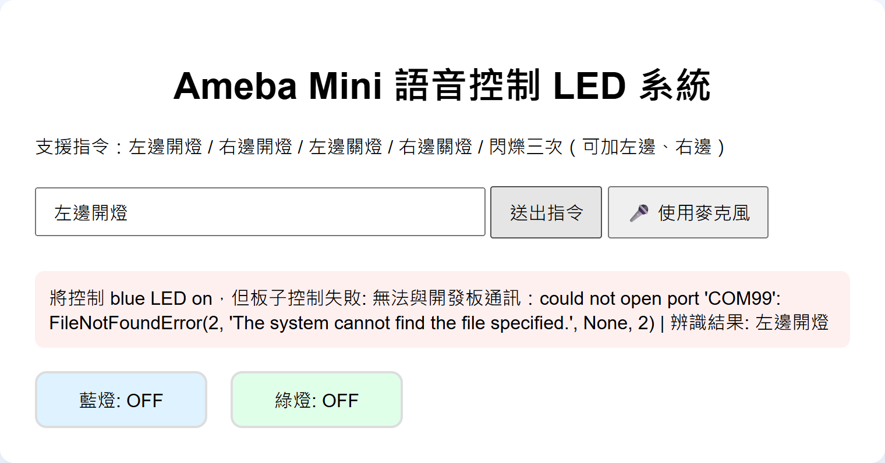

| 姓名 | 李承遠 |
|---|---|
| 學號 | 615K0012C |
| 開發板 | Realtek AMB82-MINI（AmebaPro2） |
| GitHub 專案 | https://github.com/Welly178929/Ameba_Mini_Led |
| 示範影片 | https://www.youtube.com/watch?v=aBHIVRHJqzE |
| AI 工具 | Claude Code（VS Code 擴充套件） |
以自然語言向 AI 說明需求，透過多次對話完成程式生成、測試與修正，建置一套能以語音控制 Ameba Mini 板上藍燈與綠燈的系統。
| 功能要求 | 實作方式 | 狀態 |
|---|---|---|
| 1. 語音輸入與辨識 | 瀏覽器 Web Speech API（語言 zh-TW），電腦或手機麥克風皆可；支援左邊 / 右邊開燈、關燈，另可文字輸入 | 完成 |
| 2. 指令傳輸與控制 | Flask 伺服器解析後，經 USB 序列埠（115200 baud）傳送 left_on 等指令給 AMB82-MINI，控制板載 LED | 完成 |
| 3. 操作回饋 | 網頁顯示辨識文字、送出的指令與開發板回傳訊息；只有收到板子確認後才更新 LED 狀態顯示 | 完成 |
| 4. 異常處理 | 非控制語句不送出任何指令；COM port 無法開啟、板子無回應、伺服器斷線皆會顯示提示 | 完成 |
| 5. 板卡與腳位確認 | 由 USB 晶片（CH340）與板名確認為 AMB82-MINI；由官方板級定義檔 variant.h 查得 LED_B=D23、LED_G=D24，HIGH 亮 / LOW 滅 | 完成 |
| 加分：閃爍三次 | 「左邊閃爍三次」「右邊閃3下」「閃爍三次」（兩顆），閃完恢復原本狀態 | 完成 |
| 加分：中英文指令 | 支援 left on、green off、blink 等英文說法 | 完成 |
| 加分：自訂控制介面 | 自製網頁介面，含麥克風按鈕、狀態列與 LED 狀態顯示 | 完成 |
lang = zh-TW）把語音轉成文字，並把文字以 JSON 送到 POST /command。語音辨識依規定在電腦端完成，不在 Ameba 上執行。parse_voice_command() 先把文字轉小寫，再用正規表示式比對「左邊 / 右邊 / 藍燈 / 綠燈」與「開 / 關 / 閃爍三次」，輸出 {side, action, led}。比對不到任何規則時回傳 None，伺服器回應 rejected，不會送出任何指令。AmebaLink.send() 把解析結果轉成 {side}_{action}（例如 left_on），加上換行寫入 COM7，接著等待板子回傳一行文字（逾時 3 秒）。loop() 讀取一行指令，以 digitalWrite() 控制 LED_B / LED_G，完成後回傳執行結果；未知指令回傳 ignored。device.reply，網頁只有在 device.ok = true（確實收到板子回應）時才更新 LED 狀態，符合「LED 實際狀態須有開發板回傳資訊作為依據」的要求。| 序列埠指令 | 板子動作 | 板子回傳 |
|---|---|---|
left_on / left_off | 藍燈亮 / 滅 | left_on: blue LED ON / left_off: blue LED OFF |
right_on / right_off | 綠燈亮 / 滅 | right_on: green LED ON / right_off: green LED OFF |
left_blink / right_blink / both_blink | 閃爍三次（每次亮 250 ms、滅 250 ms）後恢復原本狀態 | left_blink: blue LED blinked 3 times 等 |
| 其他 | 不動作 | ignored |
傳輸設定：USB 序列埠（CH340）、115200 baud、8N1，每行一個指令以 \n 結尾。選擇序列埠的原因是設定最單純、不需要 Wi-Fi 帳密，而且能直接取得板子的回傳文字作為執行依據。
| 檔案 | 職責 |
|---|---|
static/index.html | 操作介面、語音辨識、結果與錯誤顯示 |
src/server.py | Flask 伺服器、/command API |
src/voice_controller.py | 語音文字 → 控制指令的解析規則 |
src/ameba_serial.py | 序列埠連線、傳送指令、讀取回應、錯誤處理與自動重連 |
arduino/ameba_led_control/ameba_led_control.ino | AMB82-MINI 端 LED 控制程式 |
tests/ | 12 項 pytest 單元測試（不需接硬體） |
git clone https://github.com/Welly178929/Ameba_Mini_Led.git cd Ameba_Mini_Led python -m venv .venv .\.venv\Scripts\Activate.ps1 pip install -r requirements.txt python -m pytest -q # 12 passed
Arduino IDE：「偏好設定 → 額外的開發板管理員網址」加入下列網址，再到開發板管理員安裝 Realtek Ameba Boards (AmebaPro2)，開發板選 AMB82-MINI。
https://github.com/Ameba-AIoT/ameba-arduino-pro2/raw/main/Arduino_package/package_realtek_amebapro2_index.json
arduino-cli compile --fqbn realtek:AmebaPro2:Ameba_AMB82-MINI arduino/ameba_led_control arduino-cli upload -p COM7 --fqbn realtek:AmebaPro2:Ameba_AMB82-MINI arduino/ameba_led_control
ping fail：按住 BOOT → 按一下 RST → 放開 BOOT，讓板子進入燒錄模式後再上傳。Ameba Mini LED ready，程式才開始執行。python src/server.py # 預設 COM7 $env:AMEBA_PORT="COM8"; python src/server.py # 使用其他 COM port
http://localhost:5000。| 說法（範例） | 動作 |
|---|---|
| 左邊開燈、左邊開藍燈、left on、blue on | 藍燈亮 |
| 右邊開燈、右邊開綠燈、right on、green on | 綠燈亮 |
| 左邊關燈、右邊關燈、left off、green off | 對應的燈熄滅 |
| 左邊閃爍三次、右邊閃3下、閃爍三次、blink | 指定的燈（未指定則兩顆）閃三次後恢復原狀 |
| 其他語句（例如「今天天氣很好」） | 拒絕，LED 不變 |


left_on: blue LED ON



| 狀況 | 系統行為 |
|---|---|
| 非控制語句、空白輸入 | 解析結果為 None → API 回應 rejected，不寫入序列埠，LED 不變（圖 5） |
| 通訊中斷：USB 拔除、COM port 被占用 | 捕捉 SerialException，關閉失效連線並回傳錯誤原因；網頁顯示「板子控制失敗」，LED 狀態顯示不變（圖 7）。重新接上後，下一個指令會自動重新開啟連線 |
| 板子沒有回應（例如燒錄後未按 RST） | 等待 3 秒逾時，提示「板子沒有回應，請確認 USB 連線並已按 RST 啟動程式」 |
| 網頁連不到伺服器 | 前端捕捉 fetch 錯誤，提示「無法連線到控制伺服器，LED 狀態未改變」 |
| 瀏覽器不支援語音辨識 / 辨識失敗 | 提示改用文字輸入或重新說話 |
| 板子收到未知指令 | 不動作並回傳 ignored，伺服器視為失敗 |
| 測試 | 驗證內容 |
|---|---|
test_left_on / right_on / left_off | 中文指令解析出正確的 side、action、led |
test_invalid_command | 「今天天氣很好」回傳 None |
test_left_blink / right_blink / blink_without_side | 閃爍指令與左右判斷，含「閃3下」這類辨識變體 |
test_to_serial_command | 解析結果轉換為序列埠指令字串 |
test_accepted_command_is_sent_to_board | 被接受的指令確實送往板子（以假裝置替代硬體） |
test_rejected_command_is_not_sent | 被拒絕的語句完全不會送出指令 |
test_unavailable_port_reports_error… | COM port 不存在時回傳錯誤而不是讓伺服器當掉 |
test_communication_failure_is_reported_to_ui | 通訊失敗資訊會傳到前端 |
| 次數 | 輸入 | 解析結果 | 送出指令 | 板子回傳 | 實際 LED |
|---|---|---|---|---|---|
| 1–5 | 左邊開燈 | accepted ×5 | left_on | left_on: blue LED ON ×5 | 藍燈亮 |
| 1–5 | 右邊開燈 | accepted ×5 | right_on | right_on: green LED ON ×5 | 綠燈亮 |
| 1 | 今天天氣很好 | rejected | （未送出） | — | 不變 |
| 1 | 左邊開燈（序列埠無法開啟） | accepted | left_on | 錯誤：could not open port | 不變 |
每次開燈後都會送出對應的關燈指令，讓下一輪從熄滅狀態開始。10 次開燈指令皆收到正確回應（10/10）。此表以文字輸入測試控制鏈；語音辨識的實際表現會受麥克風與環境噪音影響，現場驗收以語音進行。
開發工具為 VS Code 中的 Claude Code。AI 可以讀寫專案檔案、執行終端機指令（pytest、arduino-cli、序列埠測試），因此每一步都能由 AI 實際執行驗證，再由我確認板子上的燈號。
| # | 我的提示詞 | AI 的處理與產出 | 結果 / 修正 |
|---|---|---|---|
| 1 | 「告訴我這個專案的執行辦法」 | 閱讀專案結構，實際執行測試與 demo，整理安裝、測試、啟動伺服器的步驟 | 發現 README 寫的 python src/demo.py 會出現 ModuleNotFoundError，改為 python -m src.demo；終端機中文亂碼需設 PYTHONUTF8=1 |
| 2 | 「ameba連結的port為COM7，幫我將開關燈指令嘗試燒錄ameba」 | 查詢 COM7 的硬體 ID（CH340），判斷板子為 AMB82-MINI；安裝 AmebaPro2 開發板套件；從官方 variant.h 查出板載 LED 腳位；編譯並燒錄 | 修正兩個錯誤：腳位由示意的 2/4 改為 LED_B/LED_G；side == "left" 改為 strcmp。燒錄成功但序列埠無回應 |
| 3 | 「燒錄」→「好了」 | 重新燒錄後仍無回應；AI 判斷板子仍停在燒錄模式，請我按 RST，並在背景監聽開機訊息 | 收到開機訊息與 Ameba Mini LED ready，4 個指令皆正確回應，實際亮燈 |
| 4 | 「在送出指令時有成功亮燈，繼續」 | 新增 ameba_serial.py，把 Flask 伺服器與序列埠串接；前端改成依板子回傳更新狀態；新增伺服器測試 | 透過 API 實測 5 種輸入皆正確；處理 COM port 被 Flask reloader 重複開啟的問題 |
| 5 | 「加入「閃爍三次」指令」 | 擴充解析規則（含左 / 右 / 兩顆、「閃3下」等變體），Arduino 新增 blinkLeds()，新增 3 項測試 | 發現閃爍約需 1.5 秒，與讀取逾時相同，將逾時改為 3 秒；燒錄出現 ping fail |
| 6 | 「重新燒錄」（先手動進入燒錄模式） | 燒錄成功，按 RST 後自動測試 5 個序列埠指令，再經 API 測試 | 閃爍功能實機確認 |
| 7 | 貼上作業說明，「完成 四、繳交成果 中的1、3項」 | 對照作業要求補強：伺服器斷線提示、無回應時自動重連；新增 requirements.txt、完整 README、12 項測試；擷取操作畫面並撰寫本報告；上傳 GitHub | 12 passed；實機 10/10 |
問題一：燒錄成功，但板子完全沒有反應
第一次燒錄時 arduino-cli 顯示 upload success，但從 COM7 送出 left_on 沒有任何回應。重新燒錄、調整 DTR/RTS 設定、延長等待時間也都沒有效果。後來請 AI 開啟序列埠監聽 45 秒，同時由我按下 RST，才收到完整的開機訊息與 Ameba Mini LED ready，之後每個指令都正確回應。
原因是 AMB82-MINI 上傳完成後會停在燒錄模式，必須按 RST 才會執行新程式。這個問題只看程式碼找不出來，是靠「監聽板子開機輸出」這個測試方法才定位到。後續也把「上傳後按 RST」與「ping fail 時手動按 BOOT + RST」寫進 README。
問題二：AI 最初產生的 LED 腳位是猜的
專案初版的 Arduino 程式使用 BLUE_LED = 2、GREEN_LED = 4，註解寫著「可替換為實際 GPIO 腳位」。燒錄前 AI 直接去讀安裝好的開發板套件中 variants/ameba_amb82-mini/variant.h，查到 #define LED_B AMB_D23 // Blue 與 #define LED_G AMB_D24 // Green，改用官方定義。這讓我學到 AI 生成的硬體相關數值要回到官方資料驗證。
問題三：C 字串比較錯誤
int pin = side == "left" ? BLUE_LED : GREEN_LED; // 修正前：比較的是指標位址 int pin = strcmp(side, "left") == 0 ? BLUE_LED : GREEN_LED; // 修正後：比較字串內容
這段程式可以編譯，而且在某些編譯器下剛好能運作，所以單靠「能不能跑」看不出來，是在閱讀程式碼時發現的。
問題四：閃爍指令被誤判為失敗
閃爍三次需要約 1.5 秒（3 × 500 ms），而伺服器讀取回應的逾時也是 1.5 秒，板子還沒回報就已判定「沒有回應」。AI 在加入功能時計算了執行時間，把逾時改為 3 秒，並讓板子在閃完後才回傳，使「回報成功」真正代表動作完成。
這次專題讓我自己實作了以 Vibe Coding 開發Ameba Mini的專案，其特別之處在於我不需要先把每一行程式想清楚，而是用自然語言描述「想要什麼結果」，例如「幫我把開關燈指令燒錄到 COM7 的 Ameba」，由 AI 查硬體資訊、寫程式、編譯燒錄並測試。原本以為最花時間的會是寫程式，實際上最花時間的是讓硬體真正動起來，例如燒錄後要按 RST、燒錄失敗要手動進入燒錄模式，這些都需要我在板子旁邊配合操作。
我也發現 AI 產生的程式不能直接相信。初版程式裡的 LED 腳位是示意值、字串比較的寫法有錯誤，這些都是在實際燒錄和閱讀程式時才被找出來的bug。因此一定得要求ai助理「LED 狀態一定要有板子回傳作為依據」，才能更好的除錯。
AI 讓我能快速完成原型並加入閃爍、中英文指令等功能，但系統設計的除錯判斷以及最後的實機確認，仍然需要由我來負責（例如通訊失敗時該怎麼提示、什麼情況不能改變 LED 狀態）。
def parse_voice_command(text: str):
normalized = text.strip().lower()
# 閃爍要先判斷，避免「左邊燈閃爍三次」被當成開燈
if any(re.search(p, normalized) for p in BLINK_PATTERNS):
...
return {"side": "both", "action": "blink", "led": "both", "raw": text}
if any(re.search(p, normalized) for p in LEFT_PATTERNS):
return {"side": "left", "action": "on", "led": "blue", "raw": text}
...
return None # 非控制語句：不產生任何指令
def send(self, serial_command: str) -> dict:
with self._lock:
try:
self._ensure_open() # 開啟時不拉 DTR/RTS，避免板子重置
self._serial.reset_input_buffer()
self._serial.write((serial_command + "\n").encode("ascii"))
reply = self._serial.readline().decode("utf-8", errors="replace").strip()
except serial.SerialException as exc:
self.close() # 通訊中斷：關閉失效連線，下次重新開啟
return {"ok": False, ..., "error": f"無法與開發板通訊：{exc}"}
if not reply:
self.close()
return {"ok": False, ..., "error": "板子沒有回應，請確認 USB 連線並已按 RST 啟動程式"}
return {"ok": reply != "ignored", ..., "reply": reply}
const int BLUE_LED = LED_B; // AMB82-MINI 板載藍燈 (D23)
const int GREEN_LED = LED_G; // AMB82-MINI 板載綠燈 (D24)
void loop() {
if (Serial.available() > 0) {
String cmd = Serial.readStringUntil('\n');
cmd.trim();
if (cmd == "left_on") {
setLedState("left", true);
Serial.println("left_on: blue LED ON");
} else if (cmd == "both_blink") {
blinkLeds(true, true, 3); // 閃完恢復原本狀態後才回報
Serial.println("both_blink: both LEDs blinked 3 times");
} ...
} else {
Serial.println("ignored");
}
}
}